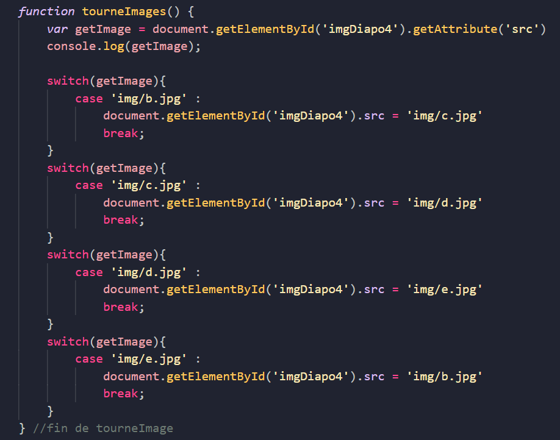

1 - Premier diaporama avec des photos de plage
1ère façon de faire, sur les images directement, je mets un 'onclick'
Dans la balise img, je mets l'attribut onclick="this.src='img/a.jpg';this.alt='Une tortue';. Pour qu'elle soit adaptée à la taille de la div, on va mettre la classe 'img-fluid'.

2 - Second diaporama avec des photos de plage

Ce second diaporama est fabriqué avec une fonction anonyme dans un écouteur d'événement 'click', dans les scripts en bas de page.
document.getElementById('btnDiapo2').addEventListener('click', function(){
document.getElementById('imgDiapo2').src = 'img/a.jpg';
document.getElementById('imgDiapo2').alt = 'Une tortue';
});
3 - Faire un diapo avec une fonction nommée

4 - Un autre diaporama
